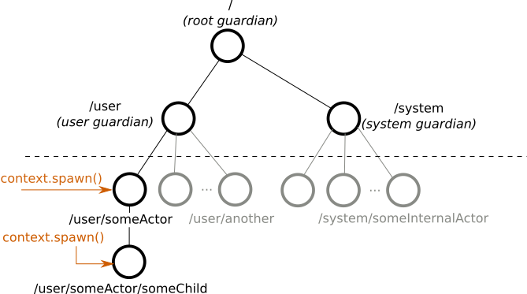

Part 1: Actor Architecture
Dependency
Add the following dependency in your project:
- sbt
libraryDependencies += "com.typesafe.akka" %% "akka-actor-typed" % "2.5-SNAPSHOT"- Maven
<dependency> <groupId>com.typesafe.akka</groupId> <artifactId>akka-actor-typed_2.12</artifactId> <version>2.5-SNAPSHOT</version> </dependency>- Gradle
dependencies { compile group: 'com.typesafe.akka', name: 'akka-actor-typed_2.12', version: '2.5-SNAPSHOT' }
Introduction
This module is currently marked as may change in the sense of being the subject of final development. This means that API or semantics can change without warning or deprecation period and it is not recommended to use this module in production just yet.
Use of Akka relieves you from creating the infrastructure for an actor system and from writing the low-level code necessary to control basic behavior. To appreciate this, let’s look at the relationships between actors you create in your code and those that Akka creates and manages for you internally, the actor lifecycle, and failure handling.
The Akka actor hierarchy
An actor in Akka always belongs to a parent. You create an actor by calling getContext().spawn()context.spawn(). The creator actor becomes the parent of the newly created child actor. You might ask then, who is the parent of the first actor you create?
As illustrated below, all actors have a common parent, the user guardian, which is defined and created when you start the ActorSystem. As we covered in the Quickstart GuideQuickstart Guide, creation of an actor returns a reference that is a valid URL. So, for example, if we create an actor named someActor from the user guardian with context.spawn(someBehavior, "someActor"), its reference will include the path /user/someActor.
FIXME update link to Quickstart to the Typed version, when it’s ready, issue https://github.com/akka/akka/issues/25997

In fact, before you create an actor in your code, Akka has already created three actors in the system. The names of these built-in actors contain guardian because they supervise every child actor in their path. The guardian actors include:
/the so-called root guardian. This is the parent of all actors in the system, and the last one to stop when the system itself is terminated./userthe guardian. This is the parent actor for all user created actors. Don’t let the nameuserconfuse you, it has nothing to do with end users, nor with user handling. Every actor you create using the Akka library will have the constant path/user/prepended to it./systemthe system guardian. Akka or other libraries built on top of Akka may create actors in the system namespace.
The easiest way to see the actor hierarchy in action is to print ActorRef instances. In this small experiment, we create an actor, print its reference, create a child of this actor, and print the child’s reference. We start with the Hello World project, if you have not downloaded it, download the Quickstart project from the Lightbend Tech HubLightbend Tech Hub.
FIXME update link to Quickstart to the Typed version, when it’s ready, issue https://github.com/akka/akka/issues/25997
In your Hello World project, navigate to the com.lightbend.akka.sample package and create a new Scala file called ActorHierarchyExperiments.scalaJava file called ActorHierarchyExperiments.java here. Copy and paste the code from the snippet below to this new source file. Save your file and run sbt "runMain com.lightbend.akka.sample.ActorHierarchyExperiments" to observe the output.
- Scala
-
import akka.actor.typed.ActorSystem import akka.actor.typed.Behavior import akka.actor.typed.scaladsl.AbstractBehavior import akka.actor.typed.scaladsl.ActorContext import akka.actor.typed.scaladsl.Behaviors object PrintMyActorRefActor { def apply(): Behavior[String] = Behaviors.setup(context ⇒ new PrintMyActorRefActor(context)) } class PrintMyActorRefActor(context: ActorContext[String]) extends AbstractBehavior[String] { override def onMessage(msg: String): Behavior[String] = msg match { case "printit" ⇒ val secondRef = context.spawn(Behaviors.empty[String], "second-actor") println(s"Second: $secondRef") this } } object Main { def apply(): Behavior[String] = Behaviors.setup(context ⇒ new Main(context)) } class Main(context: ActorContext[String]) extends AbstractBehavior[String] { override def onMessage(msg: String): Behavior[String] = msg match { case "start" ⇒ val firstRef = context.spawn(PrintMyActorRefActor(), "first-actor") println(s"First: $firstRef") firstRef ! "printit" this } } object ActorHierarchyExperiments extends App { ActorSystem(Main(), "testSystem") } - Java
-
import akka.actor.typed.ActorRef; import akka.actor.typed.ActorSystem; import akka.actor.typed.Behavior; import akka.actor.typed.javadsl.AbstractBehavior; import akka.actor.typed.javadsl.ActorContext; import akka.actor.typed.javadsl.Behaviors; import akka.actor.typed.javadsl.Receive; class PrintMyActorRefActor extends AbstractBehavior<String> { static Behavior<String> createBehavior() { return Behaviors.setup(PrintMyActorRefActor::new); } private final ActorContext<String> context; private PrintMyActorRefActor(ActorContext<String> context) { this.context = context; } @Override public Receive<String> createReceive() { return receiveBuilder().onMessageEquals("printit", this::printIt).build(); } private Behavior<String> printIt() { ActorRef<String> secondRef = context.spawn(Behaviors.empty(), "second-actor"); System.out.println("Second: " + secondRef); return this; } } class Main extends AbstractBehavior<String> { static Behavior<String> createBehavior() { return Behaviors.setup(Main::new); } private final ActorContext<String> context; private Main(ActorContext<String> context) { this.context = context; } @Override public Receive<String> createReceive() { return receiveBuilder().onMessageEquals("start", this::start).build(); } private Behavior<String> start() { ActorRef<String> firstRef = context.spawn(PrintMyActorRefActor.createBehavior(), "first-actor"); System.out.println("First: " + firstRef); firstRef.tell("printit"); return Behaviors.same(); } } public class ActorHierarchyExperiments { public static void main(String[] args) { ActorSystem.create(Main.createBehavior(), "testSystem"); } }
Note the way a message asked the first actor to do its work. We sent the message by using the parent’s reference: firstRef ! "printit"firstRef.tell("printit", ActorRef.noSender()). When the code executes, the output includes the references for the first actor and the child it created as part of the printit case. Your output should look similar to the following:
First: Actor[akka://testSystem/user/first-actor#1053618476]
Second: Actor[akka://testSystem/user/first-actor/second-actor#-1544706041]
Notice the structure of the references:
- Both paths start with
akka://testSystem/. Since all actor references are valid URLs,akka://is the value of the protocol field. - Next, just like on the World Wide Web, the URL identifies the system. In this example, the system is named
testSystem, but it could be any other name. If remote communication between multiple systems is enabled, this part of the URL includes the hostname so other systems can find it on the network. - Because the second actor’s reference includes the path
/first-actor/, it identifies it as a child of the first. - The last part of the actor reference,
#1053618476or#-1544706041is a unique identifier that you can ignore in most cases.
Now that you understand what the actor hierarchy looks like, you might be wondering: Why do we need this hierarchy? What is it used for?
An important role of the hierarchy is to safely manage actor lifecycles. Let’s consider this next and see how that knowledge can help us write better code.
The actor lifecycle
Actors pop into existence when created, then later, at user requests, they are stopped. Whenever an actor is stopped, all of its children are recursively stopped too. This behavior greatly simplifies resource cleanup and helps avoid resource leaks such as those caused by open sockets and files. In fact, a commonly overlooked difficulty when dealing with low-level multi-threaded code is the lifecycle management of various concurrent resources.
To stop an actor, the recommended pattern is to return Behaviors.stopped() inside the actor to stop itself, usually as a response to some user defined stop message or when the actor is done with its job. Stopping a child actor is technically possible by calling context.stop(childRef) from the parent, but it’s not possible to stop arbitrary (non-child) actors this way.
The Akka actor API exposes some lifecycle signals, for example PostStop is sent just before the actor stops. No messages are processed after this point.
Let’s use the PostStop lifecycle signal in a simple experiment to observe the behavior when we stop an actor. First, add the following 2 actor classes to your project:
- Scala
-
object StartStopActor1 { def apply(): Behavior[String] = Behaviors.setup(context ⇒ new StartStopActor1(context)) } class StartStopActor1(context: ActorContext[String]) extends AbstractBehavior[String] { println("first started") context.spawn(StartStopActor2(), "second") override def onMessage(msg: String): Behavior[String] = msg match { case "stop" ⇒ Behaviors.stopped } override def onSignal: PartialFunction[Signal, Behavior[String]] = { case PostStop ⇒ println("first stopped") this } } object StartStopActor2 { def apply(): Behavior[String] = Behaviors.setup(_ ⇒ new StartStopActor2) } class StartStopActor2 extends AbstractBehavior[String] { println("second started") override def onMessage(msg: String): Behavior[String] = { // no messages handled by this actor Behaviors.unhandled } override def onSignal: PartialFunction[Signal, Behavior[String]] = { case PostStop ⇒ println("second stopped") this } } - Java
-
class StartStopActor1 extends AbstractBehavior<String> { static Behavior<String> createBehavior() { return Behaviors.setup(context -> new StartStopActor1()); } private StartStopActor1() { System.out.println("first started"); } @Override public Receive<String> createReceive() { return receiveBuilder() .onMessageEquals("stop", Behaviors::stopped) .onSignal(PostStop.class, signal -> postStop()) .build(); } private Behavior<String> postStop() { System.out.println("first stopped"); return this; } } class StartStopActor2 extends AbstractBehavior<String> { static Behavior<String> createBehavior() { return Behaviors.setup(context -> new StartStopActor2()); } private StartStopActor2() { System.out.println("second started"); } @Override public Receive<String> createReceive() { return receiveBuilder().onSignal(PostStop.class, signal -> postStop()).build(); } private Behavior<String> postStop() { System.out.println("second stopped"); return this; } }
And create a ‘main’ class like above to start the actors and then send them a "stop" message:
- Scala
-
val first = context.spawn(StartStopActor1(), "first") first ! "stop" - Java
-
ActorRef<String> first = testKit.spawn(StartStopActor1.createBehavior(), "first"); first.tell("stop");
You can again use sbt to start this program. The output should look like this:
first started
second started
second stopped
first stopped
When we stopped actor first, it stopped its child actor, second, before stopping itself. This ordering is strict, all PostStop signals of the children are processed before the PostStop signal of the parent is processed.
Failure handling
Parents and children are connected throughout their lifecycles. Whenever an actor fails (throws an exception or an unhandled exception bubbles out from onMessageReceive) the failure information is propagated to the supervision strategy, which then decides how to handle the exception caused by the actor. The supervision strategy is typically defined by the parent actor when it spawns a child actor. In this way, parents act as supervisors for their children. The default supervisor strategy is to stop the child. If you don’t define the strategy all failures result in a stop.
Let’s observe a restart supervision strategy in a simple experiment. Add the following classes to your project, just as you did with the previous ones:
- Scala
-
object SupervisingActor { def apply(): Behavior[String] = Behaviors.setup(context ⇒ new SupervisingActor(context)) } class SupervisingActor(context: ActorContext[String]) extends AbstractBehavior[String] { private val child = context.spawn( Behaviors.supervise(SupervisedActor()).onFailure(SupervisorStrategy.restart), name = "supervised-actor") override def onMessage(msg: String): Behavior[String] = msg match { case "failChild" ⇒ child ! "fail" this } } object SupervisedActor { def apply(): Behavior[String] = Behaviors.setup(_ ⇒ new SupervisedActor) } class SupervisedActor extends AbstractBehavior[String] { println("supervised actor started") override def onMessage(msg: String): Behavior[String] = msg match { case "fail" ⇒ println("supervised actor fails now") throw new Exception("I failed!") } override def onSignal: PartialFunction[Signal, Behavior[String]] = { case PreRestart ⇒ println("supervised actor will be restarted") this case PostStop ⇒ println("supervised actor stopped") this } } - Java
-
class SupervisingActor extends AbstractBehavior<String> { static Behavior<String> createBehavior() { return Behaviors.setup(SupervisingActor::new); } private final ActorRef<String> child; private SupervisingActor(ActorContext<String> context) { child = context.spawn( Behaviors.supervise(SupervisedActor.createBehavior()) .onFailure(SupervisorStrategy.restart()), "supervised-actor"); } @Override public Receive<String> createReceive() { return receiveBuilder().onMessageEquals("failChild", this::failChild).build(); } private Behavior<String> failChild() { child.tell("fail"); return this; } } class SupervisedActor extends AbstractBehavior<String> { static Behavior<String> createBehavior() { return Behaviors.setup(context -> new SupervisedActor()); } private SupervisedActor() { System.out.println("supervised actor started"); } @Override public Receive<String> createReceive() { return receiveBuilder() .onMessageEquals("fail", this::fail) .onSignal(PreRestart.class, signal -> preRestart()) .onSignal(PostStop.class, signal -> postStop()) .build(); } private Behavior<String> fail() { System.out.println("supervised actor fails now"); throw new RuntimeException("I failed!"); } private Behavior<String> preRestart() { System.out.println("second will be restarted"); return this; } private Behavior<String> postStop() { System.out.println("second stopped"); return this; } }
And run with:
- Scala
-
val supervisingActor = context.spawn(SupervisingActor(), "supervising-actor") supervisingActor ! "failChild" - Java
-
ActorRef<String> supervisingActor = testKit.spawn(SupervisingActor.createBehavior(), "supervising-actor"); supervisingActor.tell("failChild");
You should see output similar to the following:
supervised actor started
supervised actor fails now
supervised actor will be restarted
supervised actor started
[ERROR] [11/12/2018 12:03:27.171] [ActorHierarchyExperiments-akka.actor.default-dispatcher-2] [akka://ActorHierarchyExperiments/user/supervising-actor/supervised-actor] Supervisor akka.actor.typed.internal.RestartSupervisor@1c452254 saw failure: I failed!
java.lang.Exception: I failed!
at typed.tutorial_1.SupervisedActor.onMessage(ActorHierarchyExperiments.scala:113)
at typed.tutorial_1.SupervisedActor.onMessage(ActorHierarchyExperiments.scala:106)
at akka.actor.typed.scaladsl.AbstractBehavior.receive(AbstractBehavior.scala:59)
at akka.actor.typed.Behavior$.interpret(Behavior.scala:395)
at akka.actor.typed.Behavior$.interpretMessage(Behavior.scala:369)
at akka.actor.typed.internal.InterceptorImpl$$anon$2.apply(InterceptorImpl.scala:49)
at akka.actor.typed.internal.SimpleSupervisor.aroundReceive(Supervision.scala:85)
at akka.actor.typed.internal.InterceptorImpl.receive(InterceptorImpl.scala:70)
at akka.actor.typed.Behavior$.interpret(Behavior.scala:395)
at akka.actor.typed.Behavior$.interpretMessage(Behavior.scala:369)
We see that after failure the supervised actor is stopped and immediately restarted. We also see a log entry reporting the exception that was handled, in this case, our test exception. In this example we also used the PreRestart signal which is processed before restarts.
For the impatient, we also recommend looking into the fault tolerance reference page for more in-depth details.
Summary
We’ve learned about how Akka manages actors in hierarchies where parents supervise their children and handle exceptions. We saw how to create a very simple actor and child. Next, we’ll apply this knowledge to our example use case by modeling the communication necessary to get information from device actors. Later, we’ll deal with how to manage the actors in groups.